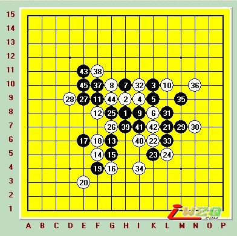

在棋院战斗的日子里
#1 在棋院战斗的日子里 作者：有志青年 发表时间：2007-5-12 12:40:49
在棋院战斗的日子里【上】
"滚滚长江东逝水, 浪花淘尽英雄, 是非成败转头空. 青山依旧在， 几度夕阳红...."
硝烟散尽,全国赛的大幕已经圆满的落下了.几家欢喜几家愁,留下些文字,算是对那一段历史的见证吧.
先介绍一下背景:这次我有幸代表唯一参赛的网络棋社[掌棋盟]打1号,实在是因为社内阵容不整,忽悠,克鲁,天雨等很多实战高手没能参加,加上我的棋风善守不善攻,才把我顶上来了.真要是人来齐了,恐怕我连给2队打替补的资格都没有,呵呵.我另外的几个队友分别是,2台天津77,3台湖北米兰,4台江西传鹰,替补吉林五子客.
这里面数米兰出道最早,名气最大.传鹰去年更是成功打进浙江A组,现在他们俩都是QQ里的偶像级高手.77是[掌棋]新近培养出来的年轻棋手,深得尼克等人真传,前途不可限量.再加上五子客和我,我们就以这样一个阵容开始了全国赛的征途.
28支队伍,7轮的瑞士积分赛,可以说运气也很重要.首轮我们对阵北京信息大学,对于对手我们几乎一无所知,大家也没定具体的目标,只是说为了掌棋盟的荣誉而血拼到底.其实大家心里都明白,遇到不强的对手,不打他们个4:0就不算成功,但是比赛的进程还是出乎了我们的预料.
首轮我们是13台先,24台后,我开出瑞星,想稳住开局后再慢慢靠中盘取胜,对手变金星,9手我怕进对手研究,变了一下,继续控制局面,10手防弱了,11以后黑必胜了,最可气是13手我活3,对手14手也活3(图1)...
我无语...反正非要我讲我就实话实说了,就这样我赢了第一盘.正好这时候裁判宣布弃权时间到,我就跟着那些对手没来的人一起出去了.
因为77要中午才到北京,五子客打的4号,他和米兰也很快秒了对手,唯一可以说说的是传鹰那盘棋.当时所有的比赛进行的都很快,里面就剩传鹰那盘棋还没结束.信息大学的人说,他们的3号是最强的,我心想坏了,传鹰开的疏星,搞不好被人缠住杀不出来了?时间一点点过去,我估计棋走到现在也差不多有百手了,差不多和了得了,没必要第一场上来就拼的伤元气.等他们出来我一看谱,差点没气死我,局面一共才20多手,对方第8手就走出必败了(图2),时间全用在对手挣扎上了...好在...第一轮我们4:0完胜对手了.
第2轮,我们对阵伟鬼领队的浙江.这是我所分析的4支强队中的1个(掌棋,浙江,河北,北京联合4队最强),要想拿第一就必须干掉浙江,但是说起来容易,做起来难啊.对方打1号的是棋坛上大名鼎鼎的11级陈霖.他为人谦和,人缘特别好,可能是棋坛口碑最好的棋手之一了,据说他在上海名人战对日本棋手保持不败,赞一个先.好在浙江也有1个软肋,就是4号蒋思语,虽然实力也很强,但必定是小姑娘,比我们老谋深算的传鹰还是有点吃力,因此我们定的目标是1号输面大,4号赢面大,就拼23号了.
陈霖先手开出了疏星局,我想了很久还是交换了,因为疏星虽然白棋稍优,但是在5手上,黑棋的选择余地太大了,差不多有近8,9个点可以选择,万一走到我不熟悉的局面,棋会很被动的.果然,局面朝着我引导的方向走了下去.实战这个这个5手,特别是这个7手的弱防,是我跟忽悠学的布局,他曾经用这个变换在去年全国赛上疯狂5连胜,对手包括当时如日中天的仇云飞和号称四川连珠名人的聂淼等人.这个棋,他们回去肯定仔细拆过了,因此我对北京和河北(队中3名主力都是四川的)肯定是不敢用这个变化了,但陈霖没参加去年的全国赛,我就赌他不会后面的白如何杀了.果然,一直到14手他都应对正确,15,17两手是我在下面必须交换的,到19最强防,20他扣住了黑棋的眠3,21我赶紧也扣住了他的眠3,交换到23手,白棋已经没杀了(图3).
实际白棋20手只要先在21的位置先冲掉眠3,然后再在20的位置扣住黑棋,局面立刻就明朗了.但是作为未知局面,陈霖能应对到现在这个局面,已经让我很钦佩了.
就在我对自己的布局感到很满意的时候,噩耗传来,就坐我旁边的77和米兰双双告负了,他们俩可是我们要拼的2盘棋啊.
其中浙江的2台戴晓涵的确很强,当时如果黑棋改走活3大定式应该是可以和棋的,但是77走的是最强13手的变化,走到第23手大意活3,结果被戴先冲掉左边后走出了28手双抓黑44的妙手,即使黑棋G11点冲掉,白杀的局面已经不可挽回了(图4).
#2 Re:在棋院战斗的日子里【中】 作者：有志青年 发表时间：2007-5-13 18:35:13
在第一天的比赛中,我们2胜1负,基本算是完成任务.今天一上来,首先对阵的是北京12中学代表队.我们几个人只是交换了一下眼神就都明白了,又到我们拿胜局数的时候了,不允许有失误,必须4:0.赛前我们对对手也没多研究,大家商量好的是:尽快结束比赛,然后去棋院对面网吧拆变化.
对方1台是一个刚上高1的小姑娘,叫曹欣玮.真羡慕她小小年纪就有征战全国赛的机会,想当年我在我们高中称霸的时候...好象跑题了...嗯...对手开局想都没想就祭出了黑必胜的溪月局,并且在我交换过后立刻走了实战中的白4(图1),
明显是有准备嘛.我猜她是想留给我1个黑棋必须连续走出唯一妙手,一步都不能错的黑必胜来考我.类似的战术在实战中应用的很普遍.问题是她有些高估我了,我回忆了好半天才确定这个局是溪月不是峡月至于5手2打...我走的2个都不是谱上记的标准必胜点.但对于实战走出的这个点,我还是很满意的,黑棋依然是牢牢控制住先手和棋型上的优势.
这个是忽悠教我的:"必胜不会走没关系,当平衡走,不着急做杀,只要控制住局面,后面机会还有的是."就象前不久京沪对抗中胡瑜对顾婉卿走松月1打中那个15手就是最好的例子.实战中,对手想了想走出了出乎我预料的白6,明显是走弱可嘛,白棋没有直接防守,而且走出的几个2对黑棋一点牵制都没有,于是我就按照最正常,最普通的杀棋方法连续进攻到15手,白投了...又是一盘15步就结束的棋.别笑,我这盘还不是最快的,77和米兰早在我前面就出去了,等传鹰一出来,我们就直奔网吧.
在网吧我先看了溪峡月的谱,没想到在后面的关键比赛中,这2眼谱看的还真起了不小的作用.
网吧回来我们知道了下一场的对手__合肥代表队.在我们的分析中,合肥是除我们4强(河北,浙江,北京联合和掌棋),实力最强的1个.是我们必须要赢,而又最不好赢的对手.他们的1号芦海是去年全国邀请赛青年组亚军,是战胜了已经记不清连续拿了多年的冠军胡瑜,而一战成的.QQ3手1里那个叫非鸟的就是他,彼此还算了解.
比赛开始,我们一三先.我没着急开局,而是先看看了另外3盘.他们2台4台都开了疏行,米兰开了个瑞星,我索性也开了瑞星.这样2盘疏星2盘瑞星,嘿嘿,看来是要硬碰硬了.非鸟没有交换,而是很快将棋走到了双跳12的局面,我一看只要我下面一活3,按瑞星大定试走下去,和棋基本是到手了,那就不急了,看看其他几盘棋的情况再说吧.
77这盘离我最近,看的最清楚,白棋没换,走的是疏星大家最常走的5.前10手棋没的说,11手近2年被研究出很多走法,有F7,G9,F8,G6等很多点,但似乎走不是很强.实战中对方2台谢冠军走的是最最古老的F9,记的好象是张进宇最先走的K9的这个12手,进而出现白必胜的结论,大致的走法见(图2).
从那以后再没人走这个11了,但77似乎不知道这个结论,还走的最古老的F8,吐血...局面平衡了.黑棋连续几手做棋其实都很勉强,象15,21等等的几手棋都是吓唬人的,77完全可以发挥自己进攻的优势在另一面做棋和对手对杀一下,可惜也许是我们比赛前不该吓唬他,说谢冠军有多强多强,结果他是一路跟着防过去了,终于在38手防守失误,39开始VCF.(图3)

传鹰那盘离我太远,看不太清楚,但是我对传鹰的疏星很放心,至少不会输.米兰的瑞星前面跟我走的一样(瑞星前面也没法变啊),这时候副裁判长肖斌走过来看了看,因为按规则,一队的2盘棋局面相同就必须拆开1个,搬家去别的地方下.米兰可能也意识到了,11手改走了扣在白棋上面那个变化,对手可能对这个变化不是很熟,开始长考.
这个时候,我这个第13手已经足足考虑了30多分钟了(图4).
非鸟虽然实力肯定不在我以下,但必定还年轻,多拖他一会他心里多少都会变急噪点的.事实上这也成了我歪打正着,赢棋的关键.
一般这个13手有3种走法,其中J9最强,但是不好掌握局面,G6是大定试,另外几个人要是赢了,我肯定走这个逼和对手,白棋想赢办法还真不是很多.H10是最激烈的走法,也是我最熟的,双方完全是对攻拼中盘的棋,说实话我心里痒痒的真想跟对手拼一下看看,当看到77局面不利的以后,我终于下定决心走了这个13.
非鸟看到我终于落子了,长出1口气,14,15,16,17双方都是定试走发,我以为他18手再走到J6,19我再K9,后面真正的战斗就真正开始了.我双手把头一捂,都准备计算跟他拼中盘了,谁知道他18手冲了K9,我一楞,19反3,他20再反,我21再反3????????????这不杀了?我很惊讶的看着他,他无奈笑了笑,输了.后来我问过他才知道,下这盘棋的时候他正发烧,本来就昏昏沉沉的,被我一步不用思考的棋拖了30多分钟,烧的他连板凳都坐不住了.就这样我很幸运的白拣了一盘棋.
#3 Re:在棋院战斗的日子里 作者：长笑 发表时间：2007-5-18 21:10:34
),＂要想拿第一就必须干掉浙江,＂看来，你给大家指明了方向
#4 在棋院战斗的日子里[下] 作者：有志青年 发表时间：2007-5-25 17:16:23
第6轮对河北是我们第一次坐到第1桌的位置,对手又是全国冠军,那阵势那感觉,就是不一样.裁判长一声令下,比赛开始.我们1,3台是后手,跟李睿凡的握过手后,我一拍钟,李睿凡抱着脑袋就开始想...一个开局足足想了10分钟...真不知道是战术,还是什么.我倒是正好趁着功夫看看其他几桌的情况.
传鹰那桌,传鹰直接开出明星局.这是我们精心准备,明星2打中一路白棋非常怪异的强防,,专门为了骗风尘的.风尘想了想...居然走的1打3打...晕啊,我们根本没往3打上想,估计传鹰对3打也没什么研究...总之布局失败...
77那桌,我们为小白准备的流星的骗,小白实战的谱量非常的大,一般的是很难走出他没见过,局面又可以一战的局面的.这个流星我们也是费了好大劲准备的...结果...小白直接走成了长星...又1个不成功的布局...好在这个我们想到了,77最擅长的就是拿着长星当浦月下,开局就一路狂攻下去,小白那里的局势,一度很紧张.
米兰那盘,魂开的瑞星...摆明了就是要往和棋里走,米兰也没换,看来这3盘棋都很艰难啊...
这时李睿凡给我开了溪月...我心里这个美啊...因为上午下了盘溪月,后来在网吧我特地复习了一下溪月的定试,至少不会开局就被骗死了.我交换到黑棋以后,李睿凡开始了他的狂攻.2步活2,3步活3,4步冲4,5步团角,6步又作了个四方块,第7步他又活3...我一边小心翼翼的防守,一边心想这还是黑必胜开局了吗?看这他那盯着棋盘空白角落里算的津津有味的样子,不知道的以为他真能在开局10来步的时候,就把棋算到棋盘角落了呢.其实由于我的5手里有一个选弱了,事后拆棋,白12手选择活3的话,后面白棋有一套非常精巧,实战中很难发现的杀法(图1).好在他有段日子不下棋,可能是生疏了,我捡回条命.
实战中他走到了20手(图2),不进攻了,提和.我当然不干,明显是我能杀的棋嘛.况且这时候传鹰那边的明星3打已经输了,这边的好局面我当然不能放弃.实战中我21,23连续活3,他都挡在了上面,更是让我坚定了在下面杀棋的决心.当时我长考了好久走了实战中的27,事实证明,我这个杀做的不够绝...原以为在K5,F4,H2点的43杀,和J2,M4,L4的V杀是2套独立杀棋呢,谁知道我漏算了M5活3的唯一防...
我很郁闷的把局面交换到35手以后,36手他防的过于自信了.此时我如果37,39冲掉,41再准确的做到G3点上,这个棋就杀了(图3).然而就在这时发生了1个意外.走完36以后,李睿凡忘记拍钟了,当时的时间是他还有20分钟多一点,我还有28分钟左右.由于下面做杀的这手棋很复杂,我顺便就把李睿凡的注意力也引到了这里,时间一点点过去,我感觉胜利离我是越来越近了.
就在这时候副裁判长肖斌走了过来,我一边用手盖着眼睛假装算棋一边心想你可千万别吱声,千万别说话啊.怕什么来什么,他上来就是一嗓子:"该你俩谁走棋啊!"我心理这个气啊.可能是后来他也意识到失言了,把钟一停,就让我们俩搬到后面去下去.用他的话说,这边空气好.其实能装200多人一起下棋的大厅,全算上只剩10来个人,何来空气不好的说法.反倒是这边离外面休息室很近,外面那些小孩的嬉笑打闹声,声声入耳.
此时由于时间压力太大,我始终没能算清楚下面的杀棋,加上左上角我的优势依然明显,实战我在G9点活3,把战火引导到上面,抽空再算下面的棋.我清楚的记的,在我们俩都剩10分钟左右的时候,大概40几手,李睿凡两次一共4步没有记谱,规则上规定时间不到5分钟可以不记谱,因为我的时间压力也很大,在比李多记了4步以后,我索性也不记了.后来1为年轻一点的裁判走过来看我们的棋,我考虑的很久活了1个3(那个情况下考虑了3分钟就够奢侈的了),年轻裁判看我没有记谱的意思,当及让我把谱补上.当时我说了本次比赛最失败的一局话,我说"我没时间了".一下让他找到话柄,跟我读起规则来,我看李睿凡没有理他的意思,反冲了个4,我也不理他,挡死.
最后时刻李睿凡的表现不得不令我敬佩,在最后双方时间都十分紧张的时候,他准确的算到了在左下角的杀棋,可见他的残局实力的确高我很多.最终我的棋也挂了,时间也没了.我歪着脑袋看着旁边罗嗦的裁判,把棋子一扔,我认输行了吧.还是李睿凡安慰我了很话,我才慢慢平静下来.然后我俩有从头开始复盘,重新记谱...因为后面下的又乱又快,从中间补谱我们谁都补不上了...
米兰那盘由于对手失误而幸运的取胜,77那盘跟我差不多,虽然他成功的虐小白满盘,但是小白很多唯一防都防住了,最后小白1个跳活3俩人都没看到,直到走了几步以后小白幸运的率先发现了(图4)...
其实我是很惧怕别人说我
#5 Re:在棋院战斗的日子里 作者：王四海 发表时间：2007-6-18 11:04:04
你们要换T恤吗？当时怎么不说？我的手机正好缺个链！
#6 Re:在棋院战斗的日子里 作者：我爱五子棋伯园 发表时间：2008-10-14 14:29:02
五子棋真是缺少你们才会暗淡无光#7 Re:在棋院战斗的日子里 作者：雅匪 发表时间：2008-10-20 23:54:12
“10手防弱了,11以后黑必胜”？谱的问题还是？俺怎么看着11以后白必胜了
#8 Re:在棋院战斗的日子里 作者：我爱五子棋伯园 发表时间：2008-10-21 9:35:21
必胜不用看，已经很明朗了